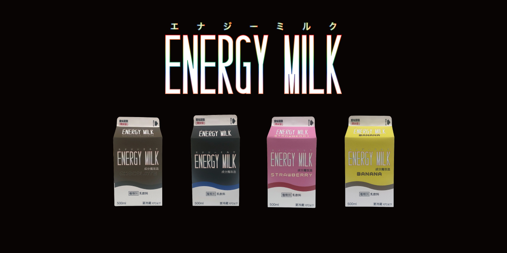
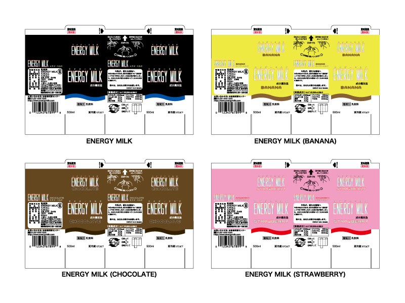
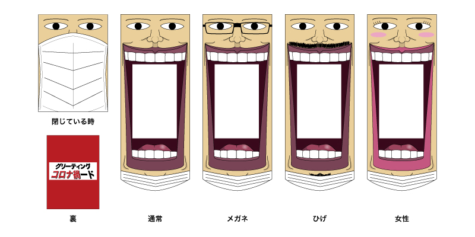
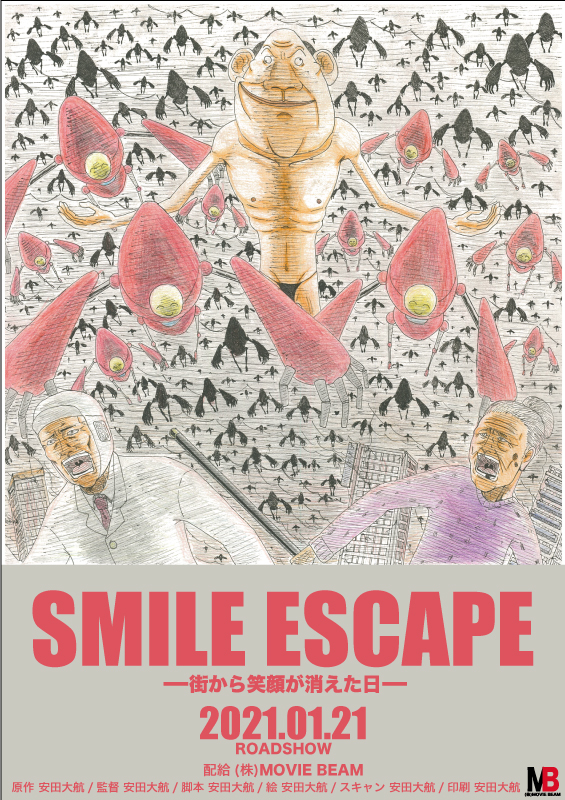

作品一覧
- 
▲紙パックパッケージ▲
- 
▲パッケージ展開図▲
【エナジーミルクとは】
ENERGY MILK は、牛乳の成分を"魔改造"することによって生まれた牛乳味のエナジードリンクです。味は牛乳、バナナミルク、いちごミルク、チョコミルクと変わらないので朝の目覚めの一杯に最適です。眠気や疲労の回復、ホルモンバランスの調整、美肌効果、血流改善、運動パフォーマンスの向上など、様々な効果が期待できます。(薬事法により効能を明記することは禁止されています。)
- エナジーミルク公式サイト(未完成)はこちら▼
-

▲グリーティングカード▲
-
【グリーティング"コロナ禍"ードとは】
新型コロナウイルスの流行により会えなくなってしまった人に送るグリーティングカードです。これまでグリーティングカードに縁のなかった人に手にとって欲しいという考えからインパクトの強いデザインにしました。また、送り主や送り先の容姿に合わせたカードを選ぶことができます。
-

▲映画ポスター▲
-
【SMILE ESCAPE とは】
イラストレーションの授業で、与えられたストーリーをもとに映画の絵コンテを描き、その映画のポスターを作りました。ある日街のロボット工場が謎の人物(ポスター中央)によってハッキングされ、操られたロボットによって工場の職員や街の人たちが襲われてしまうというのが与えられたストーリーです。恐怖によって街から笑顔が消えていくのとは反対にロボットはずっと笑っています。クラスメイトの多くが謎の人物をカッコよく描くと思い、逆に気持ち悪い見た目を目指しました。